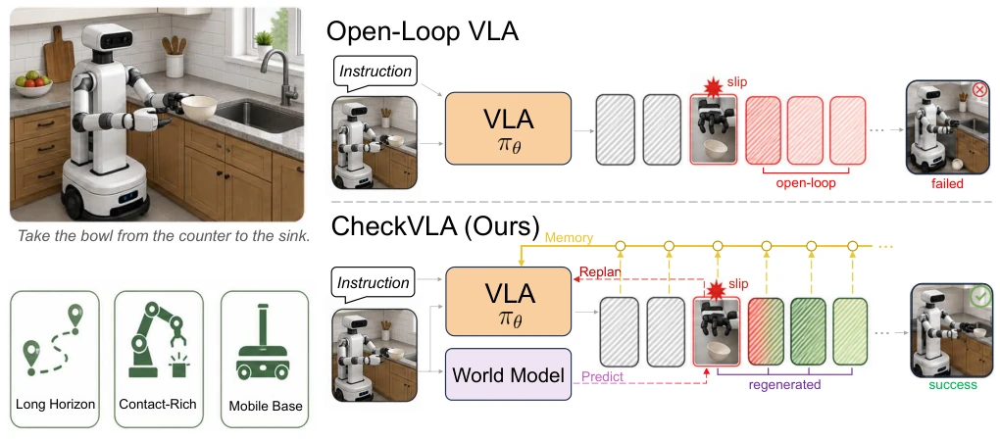
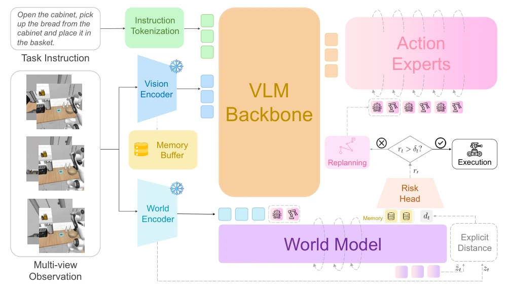
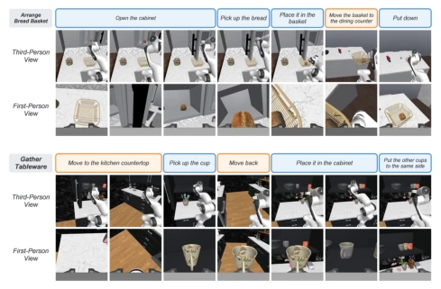
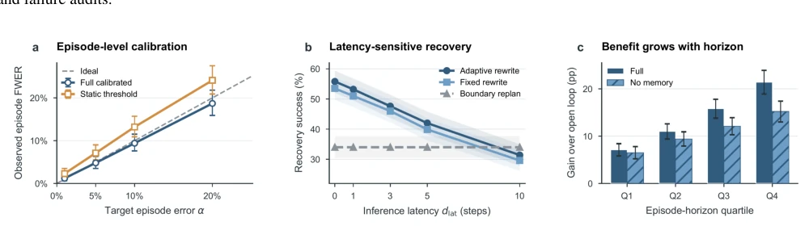

CheckVLA equips VLA with a "real-time vehicle inspection" system, specifically targeting the "blind driving" flaw in long-horizon tasks. It does not employ flashy end-to-end retraining, but instead attaches an external frozen world model as a referee to monitor the alignment between actions and observations. This strategy indeed works well, pulling success rates from 27.6% to 36.1% on RoboCasa365, outperforming periodic replanning. But do not celebrate too early; this mechanism is currently running in simulation, so how to cope with latency jitter and perception noise in real-robot deployment? Additionally, its conformal calibration only handles the "first false positive", with no safety guarantee afterwards, belonging to a "symptomatic treatment" patch. However, for critical flaws like slippage and displacement in long-horizon manipulation, it is at least better than blindly pushing forward, counting as adding a safety valve to open-loop strategies, and inference costs are controllable.
研究动机Motivation
长程移动操作里，VLA 策略常采用开环动作块（chunking）来省推理开销（Black et al. 2024）。但这意味着一旦中间发生物体滑脱或基座偏移，后续动作还在按原计划执行，误差会累积（Ross and Bagnell 2010）。现有的监控方法要么依赖提交时的不确定性（Liu et al. 2024），要么只用观测信号（Gu et al. 2025; Zhang et al. 2026），缺乏动作条件参考，分不清是预期变化还是意外偏差。CheckVLA 想解决的就是这个“执行时验证”的空白，把动作块当成可测试的预测，在推理延迟允许范围内修复后缀，而不是等整个块跑完再重算，从而在保持吞吐量的同时恢复反馈。
In long-horizon mobile manipulation, VLA strategies often adopt open-loop action chunks (chunking) to save inference overhead (Black et al. 2024). But this means once object slippage or base offset occurs in the middle, subsequent actions continue executing according to the original plan, and errors will accumulate (Ross and Bagnell 2010). Existing monitoring methods either rely on uncertainty at submission (Liu et al. 2024) or only use observation signals (Gu et al. 2025; Zhang et al. 2026), lacking action-conditioned references and unable to distinguish between expected changes and unexpected deviations. CheckVLA aims to solve this "execution-time verification" gap, treating action chunks as testable predictions, fixing suffixes within the allowed inference latency, rather than waiting for the entire chunk to finish before recalculating, thereby restoring feedback while maintaining throughput.

Figure 1: Overview of CheckVLA. Open-loop chunks can propagate in-chunk failures such as slippage. CheckVLA compares action-conditioned predictions with arriving observations, uses an episode-calibrated threshold to trigger intervention, and rewrites the repairable suffix while preserving episodic context.
The overall process is divided into four steps: after action chunk submission, the frozen monitoring encoder extracts observation features, the world model Ψ predicts short-term features based on remaining actions, and the risk head R aggregates the gap between prediction and observation. The triggering mechanism uses functional conformal calibration to set thresholds, controlling the false positive rate. Once triggered, VLA rewrites the suffix, but constrained by inference latency (dlat), the prefix is retained via hard constraints (hard prefixing) to prevent action jumps. Weights decay adaptively based on risk excess, retaining some old action references. Additionally, an event-driven keyframe bank records historical context to prevent forgetting of completed sub-goals during repair. The entire validator is decoupled from the policy, frozen during training, ensuring monitoring does not interfere with policy optimization, and uses a flow-matching backbone network to ensure generation quality.

Figure 2: The CheckVLA framework. A separately trained, frozen encoder supplies monitoring features; the world model predicts near-term consequences of the committed actions; the causal risk head compares aggregated risk rt with the calibrated threshold δt; upon a declared failure, the same VLA rewrites the repairable suffix under the hard-prefix constraint with risk- graded guidance.
Tested on the RoboCasa365 simulation benchmark, policies only use Human300 pretraining. CheckVLA average success rate 36.1%, 8.5 percentage points higher than periodic replanning, performing particularly well on composite tasks. Under a 5% false positive rate target, timely recall rate of action-conditioned verification is 77.9%, far higher than observation-only's 48.6%. Ablation studies show that removing action conditioning or rolling re-anchoring significantly reduces performance. In latency-aware repair rules, adaptive guidance balances rescue and harm better than fixed guidance. However, the system adds about 88M parameters and 1.18x inference cost, and currently only validated in simulation environments, generalization in the real physical world still needs observation, no real robot deployment results seen.

Figure 3: Composite RoboCasa365 episodes (Arrange Bread Basket, top; Gather Tableware, bottom): subtask prompts aligned with third- and first-person keyframes; blue denotes manipulation and orange base motion.

Figure 4: Closed-loop diagnostics. (a) Episode-level unnecessary-first-intervention frequency versus target conformal level. (b) Perturbation recovery across inference latency. (c) Paired gain over open loop across horizon quartiles, with and without memory. Bars and bands are 95% intervals: exact binomial in (a), hierarchical paired bootstrap in (b) and (c).